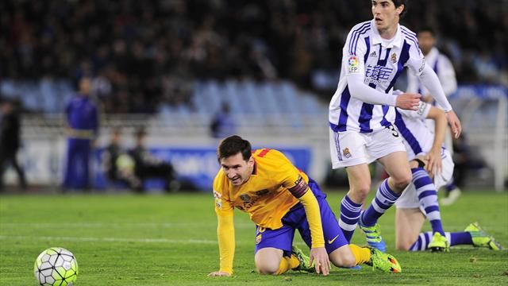
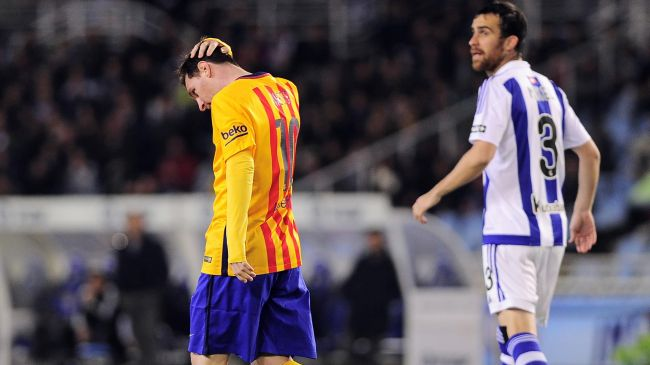
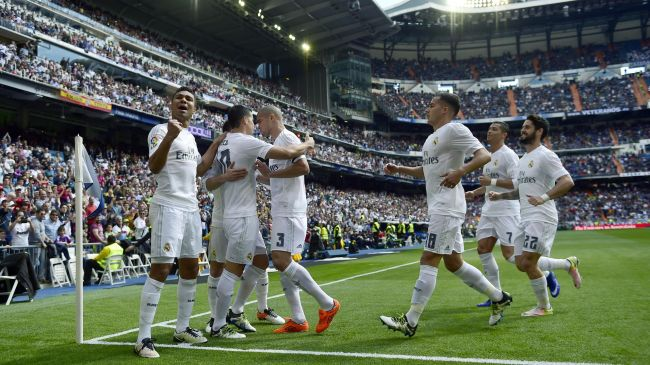
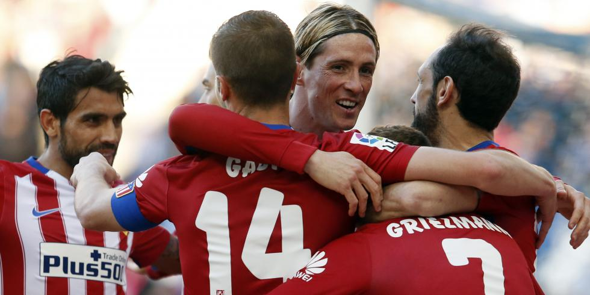
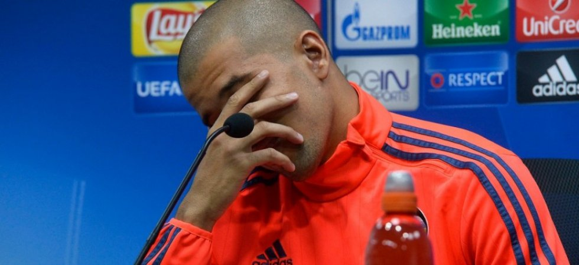
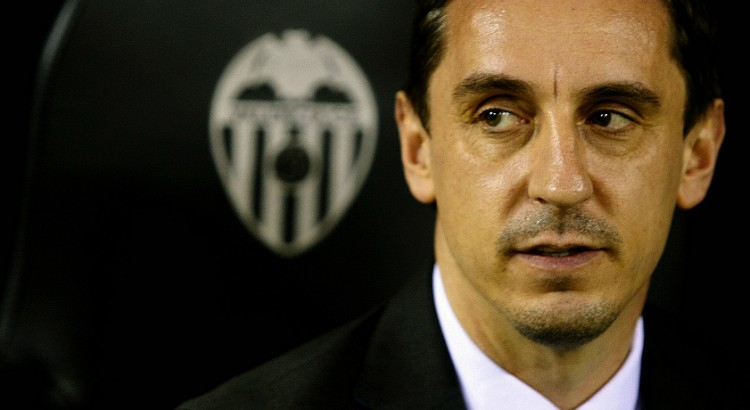

Le Barça se prend encore les pieds dans le tapis et la Liga est relancée !
LIGA - Une semaine après avoir subi la loi du Real Madrid (1-2), le FC Barcelone s'est une nouvelle fois incliné en Liga.
Lors de la 32e journée, les Catalans ont été battus par la Real Sociedad (1-0). Privé de Suarez, suspendu, le Barça (1er) est passé
à côté et voit l'Atlético (2e) et le Real (3e) revenir respectivement
à trois et quatre points. Cette fin de saison promet !
Mercredi, le classement de la Liga sera mis de côté. Le Barça ira défier l'Atlético à Vicente-Calderon pour défendre son but
d'avance et accéder au dernier carré de la Ligue des champions. Mais samedi soir, les Blaugrana ne peuvent pas occulter la
réalité comptable : en Championnat aussi,
les Colchoneros leur causent des soucis. En s'inclinant à San Sebastian face à Real Sociedad (1-0), l'équipe de Luis Enrique
n'a pas seulement subi son deuxième revers de rang en Liga, une semaine après le Clasico perdu face au Real (1-2). Son fauteuil de
leader est désormais menacé. Trois petits points séparent désormais le Barça de l'Atlético. Il y a encore deux semaines,
les Blaugrana dormaient sur leurs deux oreilles, confortablement installés sur un matelas de neuf unités. Même le Real de Zidane,
que l'on croyait hors-jeu dans la course au titre, n'a pas dit son dernier mot. Les Merengue, qui ont passé leurs nerfs sur Eibar
(4-0) dans l'après-midi, ne sont plus qu'à quatre longueurs.

Ça tombe mal pour le Barça : voilà 5 ans que Messi n'avait pas été muet aussi longtemps
Lionel Messi traverse sa plus grande période sans marquer avec le Barça depuis mai 2011. Une disette qui tombe
mal dans une fin de saison riche en enjeux pour les Catalans.
C'est une barre symbolique qu'il aurait dû franchir avec la facilité qui l'accompagne depuis ses débuts professionnels.
Lionel Messi enchaîne les buts et les records depuis 2004. Si bien que le moindre grain de sable prend la forme d'un immense
caillou dans la chaussure du Barça. Depuis le 25 mars, il cherche à franchir la barre des 500 buts marqués en carrière mais son
compteur reste désespérément bloqué à 499.

Le Real ne fait qu'une bouchée d'Eibar (4-0) et se rassure (un peu)
LIGA - Trois jours après la claque de Wolfsburg (2-0), le Real Madrid s'est remis dans le droit chemin en battant Eibar (4-0), lors de la 32e journée
de la Liga. Ce succès permet aux Merengue, désormais à quatre points du Barça, de se relancer dans la course au titre. Et d'aborder leur quart de
finale retour de Ligue des champions dans de meilleures dispositions.
Bien sûr, l'adversaire n'était pas d'une stature suffisante pour y voir une mise au point. Bien sûr, en face, ce n'était qu'une équipe du milieu de
tableau de la Liga. Il n'empêche : samedi après-midi, le Real Madrid a repris une petite dose de confiance, en réussissant un festival offensif face
à Eibar (4-0). Mieux, il n'est plus qu'à quatre points du Barça, battu chez la Real Sociedad (1-0). C'est bon pour le moral. Dans trois jours,
l'équipe de Zinédine Zidane devra remonter deux buts face à Wolfsburg (2-0).
Décisif face à Eibar (4-0), samedi, James Rodriguez a enfin répondu aux critiques et sorti une prestation pleine et réellement
convaincante avec le Real Madrid. Son but inscrit sur coup franc et son attitude d'ensemble offrent à Zinedine Zidane de nouveaux
horizons tactiques avant le 1/4 de finale retour de Ligue des champions face à Wolfsburg, mardi prochain.
C'était la semaine de tous les contrastes pour James Rodriguez. Laissé sur le banc de touche par Zinedine Zidane lors de la défaite sur la pelouse
de Wolfsburg (2-0), mercredi dernier en quart de finale aller de Ligue des champions, le Colombien, qui avait très mal vécu ce moment, s'est repris
lors du succès madrilène face à Eibar, samedi (4-0). Il a d'ailleurs sorti l'une
de ses prestations les plus abouties de la saison devant le public du Santiago-Bernabeu. L'heure de la rédemption.

Grâce notamment à la 20e réalisation d'Antoine Griezmann et à un Fernando Torres décisif, l'Atlético Madrid l'a emporte à
Barcelone... sur la pelouse de l'Espanyol (1-3).
Les Colchoneros ne sont plus qu'à trois points du Barça, qui a chuté chez la Real Sociedad (1-0).
L'Atlético a gagné à Barcelone. Pas au Camp Nou, où les Colchoneros se sont inclinés mardi, en quart de finale aller de la Ligue des champions.
Non. Samedi, quatre jours avant de retrouver le Barça dans la capitale espagnole,
les joueurs de Diego Simeone l'ont emporté sur la pelouse de l'Espanyol (1-3).

Sofiane Feghouli, le milieu offensif algérien de Valence, a été écarté de l'effectif professionnel, a-t-on appris ce lundi dans un
communiqué de la formation espagnole.
Le FC Valence a annoncé sur son site internet qu'il avait pris une sanction disciplinaire
à l'encontre de Sofiane Feghouli. Libre en juin prochain, le milieu de terrain offensif international algérien de vingt-six ans a
été écarté jusqu'à nouvel ordre. Le club espagnol a ouvert une procédure disciplinaire contre son numéro 8 pour des raisons encore
non-dévoilées. Dans l'attente de la résolution du conflit, l'ancien Grenoblois est temporairement suspendu et ne participera pas aux
entraînements et matchs de l'équipe.
Selon Marca, Sofiane Feghouli aurait refusé de participer à la séance d'entrainement prévue ce lundi matin pour les remplaçants et les joueurs non
utilisés la veille contre le FC Séville (2-1, 32eme journée de Liga), mais le mal semble plus profond pour celui qui n'a toujours pas prolongé
son engagement qui arrive à expiration et qui pourrait donc partir libre dans quelques semaines.

Gary Neville a fait long feu sur le banc de Valence. Quatre mois seulement après sa nomination au poste d’entraîneur du club ché en remplacement
de Nuno Espirito Santo,
le technicien anglais (41 ans) a été officiellement démis de ses fonctions mercredi. L’ancien défenseur de Manchester United, qui s’était engagé
jusqu’à la fin de la saison pour sa première expérience de coach principal, paye les mauvais résultats de son équipe. Elle n’a remporté que dix des vingt-huit matchs disputés toutes compétitions confondues avec Neville comme coach.
Valence occupe actuellement la quatorzième place du classement en Liga. « J’aurais aimé continuer le travail que j’avais commencé, mais
je comprends que nous sommes dans un business qui se base sur les résultats et ils n’ont pas été la hauteur des exigences que requiert le club »
, a expliqué le natif de Bury dans un message publié sur le site officiel du VCF.
Pellegrini et Sampaoli dans le viseur
Membre du staff de la sélection anglaise depuis quatre ans, Neville est remplacé jusqu’à la fin de la saison par Pako Ayestaran, qui était l’un de ses adjoints à Valence.
Ancien assistant de Rafael Benitez, il a déjà connu des expériences comme entraîneur principal à l’étranger (Maccabi Tel-Aviv, Santos Laguna, Estudiantes
Tecos). Il devrait assurer l’intérim jusqu’en juin, avant qu’un technicien de renom ne débarque en vue de la saison prochaine. Manuel Pellegrini et Jorge Sampaoli, via un Jorge Mendes très influent au sein de la sphère ché, font partie des cibles étudiées par les dirigeants. En attendant, Valence doit assurer au plus vite son maintien en Liga.